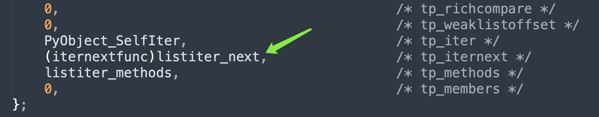

楔子
只要类型对象实现了 __iter__，那么它的实例对象就被称为可迭代对象（Iterable），比如字符串、元组、列表、字典、集合等等。而整数、浮点数，由于其类型对象没有实现 __iter__，所以它们不是可迭代对象。
from typing import Iterable
print(
isinstance("", Iterable),
isinstance((), Iterable),
isinstance([], Iterable),
isinstance({}, Iterable),
isinstance(set(), Iterable),
) # True True True True True
print(
isinstance(0, Iterable),
isinstance(0.0, Iterable),
) # False False
可迭代对象的一大特点是可以被 for 循环遍历，但能被 for 循环遍历的则不一定是可迭代对象。我们举个例子：
class A:
def __getitem__(self, item):
return f"参数 item: {item}"
a = A()
# 内部定义了 __getitem__
# 首先可以让实例对象像字典一样访问属性
print(a["name"]) # 参数 item: name
print(a["satori"]) # 参数 item: satori
# 此外还可以像可迭代对象一样被 for 循环
# 循环的时候会自动给 item 传值：0 1 2 3 ...
# 如果内部出现了 StopIteration，循环结束
# 否则会一直循环下去，这里我们手动 break
for idx, val in enumerate(a):
print(val)
if idx == 5:
break
"""
参数 item: 0
参数 item: 1
参数 item: 2
参数 item: 3
参数 item: 4
参数 item: 5
"""
所以实现了 __getitem__ 的类的实例，也是可以被 for 循环的，但它并不是可迭代对象。
from typing import Iterable
print(isinstance(a, Iterable)) # False
总之判断一个对象是否是可迭代对象，就看它的类型对象有没有实现 __iter__。可迭代对象我们知道了，那什么是迭代器呢？很简单，调用可迭代对象的 __iter__ 方法，得到的就是迭代器。
迭代器的创建
不同类型的对象，都有自己的迭代器，举个栗子。
data = [1, 2, 3]
# 底层调用的其实是 list.__iter__(data)
# 或者说 PyList_Type.tp_iter(data)
it = data.__iter__()
print(it)
"""
<list_iterator object at 0x102c1cf10>
"""
print(str.__iter__(""))
"""
<str_iterator object at 0x100e623b0>
"""
print(tuple.__iter__(()))
"""
<tuple_iterator object at 0x100e623b0>
"""
# 不难发现，迭代器的种类非常多
# 比如 list_iterator、str_iterator、tuple_iterator 等等
迭代器也是可迭代对象，只不过迭代器内部的 __iter__ 返回的还是它本身。当然啦，在创建迭代器的时候，我们更常用内置函数 iter。
data = [1, 2, 3]
# 等价于 type(data).__iter__(data)
it = iter(data)
但是 iter 函数还有一个鲜为人知的用法，我们来看一下：
val = 0
def foo():
global val
val += 1
return val
# iter 可以接收一个参数: iter(可迭代对象)
# iter 也可以接收两个参数: iter(可调用对象, value)
for i in iter(foo, 5):
print(i)
"""
1
2
3
4
"""
进行迭代的时候，会不停地调用可调用对象，直到返回值等于传递的第二个参数 value（在底层被称为哨兵），然后终止迭代。我们看一下 iter 函数的底层实现。
// Python/bltinmodule.c
static PyObject *
builtin_iter(PyObject *self, PyObject *const *args, Py_ssize_t nargs)
{
PyObject *v;
// 内置函数 iter 接收 1 ~ 2 个参数
if (!_PyArg_CheckPositional("iter", nargs, 1, 2))
return NULL;
// 如果 nargs 等于 1，那么 args[0] 是可迭代对象
// 如果 nargs 等于 2，那么 args[0] 是可调用对象
v = args[0];
// nargs == 1，说明 v 是可迭代对象
if (nargs == 1)
// 调用 PyObject_GetIter 获取对象的迭代器
return PyObject_GetIter(v);
// 否则说明 nargs == 2，那么 v 是可调用对象
// 这里进行检测，如果不是，抛出 TypeError
if (!PyCallable_Check(v)) {
PyErr_SetString(PyExc_TypeError,
"iter(v, w): v must be callable");
return NULL;
}
// 获取哨兵
PyObject *sentinel = args[1];
// 一会儿单独解释
return PyCallIter_New(v, sentinel);
}
以上就是 iter 函数的内部逻辑，既可以接收一个参数，也可以接收两个参数。这里我们只看接收一个可迭代对象的情况，所以核心就在 PyObject_GetIter 函数里面，它是根据可迭代对象生成迭代器的关键，我们来看一下它的逻辑是怎样的？
// Objects/abstract.c
PyObject *
PyObject_GetIter(PyObject *o)
{
// 获取可迭代对象的类型对象，比如 o 是列表，那么 t 就是 list
PyTypeObject *t = o->ob_type;
// 我们说类型对象定义的操作，决定了实例对象的行为
// 实例对象调用的那些方法都是定义在类型对象里面的
// 还是那句话：obj.func() 等价于 type(obj).func(obj)
getiterfunc f;
// 所以这里是获取类型对象的 tp_iter 字段
// 也就是 Python 中的 __iter__
f = t->tp_iter;
// 如果 f 为 NULL，说明类型对象的内部没有定义 __iter__
// 像 str、tuple、list 等类型对象，它们的 tp_iter 字段都是不为 NULL 的
if (f == NULL) {
// 如果 tp_iter 为 NULL，那么解释器会退而求其次
// 检测该类型对象中是否定义了 __getitem__
// 如果定义了，那么直接调用 PySeqIter_New，创建 seqiterobject 对象
// 下面的 PySequence_Check 函数负责检测类型对象是否实现了 __getitem__
// __getitem__ 对应 tp_as_sequence->sq_item
if (PySequence_Check(o))
return PySeqIter_New(o);
// 走到这里说明该类型对象既没有 __iter__、也没有 __getitem__
// 因此它的实例对象不具备可迭代的性质，于是抛出异常
return type_error("'%.200s' object is not iterable", o);
}
else {
// 否则说明定义了 __iter__
// 调用 o->ob_type->tp_iter(o) 返回对应的迭代器
PyObject *res = (*f)(o);
// 但如果返回值 res 不为 NULL、并且还不是迭代器
// 证明 __iter__ 的返回值有问题，于是抛出异常
if (res != NULL && !PyIter_Check(res)) {
PyErr_Format(PyExc_TypeError,
"iter() returned non-iterator "
"of type '%.100s'",
res->ob_type->tp_name);
Py_DECREF(res);
res = NULL;
}
// 返回 res
return res;
}
}
以上便是 iter 函数的底层实现，还是很简单的。然后是里面的 __getitem__，我们说如果类型对象内部没有定义 __iter__，那么解释器会退而求其次，检测内部是否定义了 __getitem__。
因此以上就是迭代器的创建过程，每个可迭代对象都有自己的迭代器，而迭代器本质上就是对原始数据的一层封装罢了。
迭代器的底层结构
由于迭代器的种类非常多，字符串、元组、列表等等，都有自己的迭代器，这里就不一一介绍了。我们就以列表的迭代器为例，看看迭代器在底层的结构是怎么样的。
// Objects/listobject.c
// 列表迭代器的类型对象为 <class 'list_iterator'>
// 但这个类，解释器并没有暴露给我们，所以需要通过 type 获取
// 然后它的 tp_basicsize 字段为 sizeof(listiterobject)
// 这就说明列表迭代器在底层由 listiterobject 结构体表示
PyTypeObject PyListIter_Type = {
PyVarObject_HEAD_INIT(&PyType_Type, 0)
"list_iterator", /* tp_name */
sizeof(listiterobject), /* tp_basicsize */
0, /* tp_itemsize */
// ...
};
typedef struct {
PyObject_HEAD
Py_ssize_t it_index;
// 指向创建该迭代器的列表
PyListObject *it_seq;
} listiterobject;
所以迭代器就是基于可迭代对象进行了一层简单的封装，所谓元素迭代本质上还是基于索引，并且每迭代一次，索引就自增 1。一旦出现索引越界，就将 it_seq 设置为 NULL，表示迭代器迭代完毕。
我们实际演示一下：
from ctypes import *
class PyObject(Structure):
_fields_ = [
("ob_refcnt", c_ssize_t),
("ob_size", c_void_p)
]
class ListIterObject(PyObject):
_fields_ = [
("it_index", c_ssize_t),
("it_seq", POINTER(PyObject))
]
it = iter([1, 2, 3])
it_obj = ListIterObject.from_address(id(it))
# it_seq 指向列表 [1, 2, 3]，it_index 初始为 0
print(it_obj.it_index) # 0
# 进行迭代
next(it)
# 索引自增 1，此时 it_index 等于 1
print(it_obj.it_index) # 1
# 再次迭代
next(it)
# 此时 it_index 等于 2
print(it_obj.it_index) # 2
# 再次迭代
next(it)
# 此时 it_index 等于 3
print(it_obj.it_index) # 3
当 it_index 为 3 的时候，如果再次迭代，那么底层会发现 it_index 已超过最大索引，于是知道迭代器已经迭代完毕了。因此会将 it_seq 设置为 NULL，并抛出 StopIteration。如果是 for 循环，那么会自动捕获此异常，然后停止循环。
所以这就是迭代器，真的没有想象中的那么神秘，甚至在知道它的实现原理之后，还觉得有点 low，因为就是将原始数据包了一层，加了一个索引而已。所谓的迭代仍然是基于索引来做的，并且每迭代一次，索引就自增 1。当索引超出范围时，证明迭代完毕了，于是将 it_seq 字段设置为 NULL，抛出 StopIteration。
迭代器是怎么迭代元素的
迭代器的创建我们知道了，那么它是怎么迭代元素的呢？首先迭代元素可以通过 next 函数，当然它本质上也是调用了对象的 __next__ 方法。
// Python/bltinmodule.c
static PyObject *
builtin_next(PyObject *self, PyObject *const *args, Py_ssize_t nargs)
{
PyObject *it, *res;
// 同样接收 1 ~ 2 个参数
// 因为调用 next 函数时，可以传入一个默认值
// 表示当迭代器没有元素可以迭代的时候，会返回指定的默认值
if (!_PyArg_CheckPositional("next", nargs, 1, 2))
return NULL;
// 迭代器
it = args[0];
// 类型检测，如果不是迭代器，那么抛出异常
if (!PyIter_Check(it)) {
PyErr_Format(PyExc_TypeError,
"'%.200s' object is not an iterator",
it->ob_type->tp_name);
return NULL;
}
// it->ob_type 表示获取类型对象，也就是该迭代器的类型
// 当然具体类型是哪一种并不确定，可能是列表迭代器、元组迭代器、字符串迭代器等等
// 然后再获取 tp_iternext 字段，相当于 __next__
// 拿到函数指针之后，传入迭代器进行调用
res = (*it->ob_type->tp_iternext)(it);
// 如果 res 不为 NULL，那么证明迭代到值了，直接返回
if (res != NULL) {
return res;
} else if (nargs > 1) {
// 否则的话，说明没有迭代到值（返回 NULL），而这时候有两种情况
// 1）迭代器已耗尽，2）在迭代过程中出现异常
// 那么判断 nargs 是否大于 1，如果大于 1，说明设置了默认值
PyObject *def = args[1];
// 检测异常是不是迭代完毕时（或者手动 raise）产生的 StopIteration 异常
if (PyErr_Occurred()) {
if(!PyErr_ExceptionMatches(PyExc_StopIteration))
// 如果不是，说明程序的逻辑有问题，直接 return NULL，结束执行
// 然后在 Python 里面我们会看到打印到 stderr 中的异常信息
return NULL;
// 如果异常是 StopIteration，证明迭代完毕了
// 但我们设置了默认值，那么就应该返回默认值
// 而不应该抛出 StopIteration，于是将异常回溯栈给清空
PyErr_Clear();
}
// 增加默认值的引用计数，然后返回
Py_INCREF(def);
return def;
} else if (PyErr_Occurred()) {
// 走到这里说明 res == NULL，并且没有指定默认值
// 那么当发生异常时，将异常直接抛出
return NULL;
} else {
// 都不是的话，直接抛出 StopIteration
PyErr_SetNone(PyExc_StopIteration);
return NULL;
}
}
以上就是 next 函数的背后逻辑，实际上还是调用了迭代器的 __next__ 方法。
data = [1, 2, 3]
it = iter(data)
# 然后迭代，等价于 next(it)
print(type(it).__next__(it)) # 1
print(type(it).__next__(it)) # 2
print(type(it).__next__(it)) # 3
# 但是 next 可以指定默认值
# 如果不指定默认值，或者还是 type(it).__next__(it)
# 那么就会报错，抛出 StopIteration
print(next(it, 666)) # 666
以上就是元素的迭代，由于内置函数 next 还可以指定一个默认值，所以更强大一些。当然在不指定默认值的情况下，next(it) 和 type(it).__next__(it) 最终是殊途同归的。
我们仍以列表的迭代器为例，看看 __next__ 的具体实现。

由于 tp_iternext 字段指向了 listiter_next，证明迭代的时候调用的是这个函数。
// Objects/listobject.c
static PyObject *
listiter_next(listiterobject *it)
{
// 迭代器只是对可迭代对象的一层封装
// 如果是列表的迭代器，那么内部的 it_seq 字段便指向列表
PyListObject *seq;
PyObject *item;
assert(it != NULL);
// 如果 it->it_seq 等于 NULL，说明迭代器已经迭代完毕了
// 从这里也能看出迭代器不能二次循环迭代
seq = it->it_seq;
if (seq == NULL)
return NULL;
assert(PyList_Check(seq));
// 如果 it->it_index 小于列表的长度
if (it->it_index < PyList_GET_SIZE(seq)) {
// 那么获取元素
item = PyList_GET_ITEM(seq, it->it_index);
// it_index 自增 1
++it->it_index;
// 增加元素的引用计数，并返回
Py_INCREF(item);
return item;
}
// 否则说明 it_index 已经达到了列表的长度
// 再迭代就索引越界了，而对于迭代器来说
// 当 it_index 等于列表长度时，就证明所有元素都迭代完毕了
it->it_seq = NULL; // 将 it_seq 设置为 NULL
Py_DECREF(seq);
return NULL;
}
显然这和之前分析的是一样的，以上我们就以列表为例，考察了迭代器的实现原理和元素迭代的具体过程。当然其它对象也有自己的迭代器，有兴趣可以看一看，实现方式都大同小异。
iter 函数接收两个参数
前面说了，iter 函数如果接收一个参数，那么这个参数必须是可迭代对象。如果接收两个参数，那么第一个参数要是 callable，第二个参数是哨兵。迭代时会调用 callable，当返回值等于哨兵时，迭代结束，那么它的底层是怎么实现的呢？这里简单补充一下。
// Python/bltinmodule.c
static PyObject *
builtin_iter(PyObject *self, PyObject *const *args, Py_ssize_t nargs)
{
// ...
PyObject *sentinel = args[1];
// 如果参数个数等于 2，会调用 PyCallIter_New
return PyCallIter_New(v, sentinel);
}
// Objects/iterobject.c
typedef struct {
PyObject_HEAD
PyObject *it_callable;
PyObject *it_sentinel;
} calliterobject;
PyObject *
PyCallIter_New(PyObject *callable, PyObject *sentinel)
{
// iter(callable, value) 会返回一个 <class 'callable_iterator'> 实例
// 在底层由 calliterobject 结构体实现
calliterobject *it;
// 为 calliterobject 实例申请内存
it = PyObject_GC_New(calliterobject, &PyCallIter_Type);
if (it == NULL)
return NULL;
// 初始化字段
Py_INCREF(callable);
it->it_callable = callable;
Py_INCREF(sentinel);
it->it_sentinel = sentinel;
_PyObject_GC_TRACK(it);
return (PyObject *)it;
}
// 再来看看迭代过程
static PyObject *
calliter_iternext(calliterobject *it)
{
PyObject *result;
// 如果 it_callable 字段为空，说明迭代结束，不能再次迭代
if (it->it_callable == NULL) {
return NULL;
}
// 调用 it_callable，拿到返回值 result
result = _PyObject_CallNoArg(it->it_callable);
if (result != NULL) {
int ok;
// 如果 result 和哨兵相等，那么 ok == 1，否则 ok == 0
ok = PyObject_RichCompareBool(it->it_sentinel, result, Py_EQ);
// ok == 0，说明两者不相等，那么返回 result
if (ok == 0) {
return result;
}
// ok > 0，说明返回值和哨兵相等，那么迭代结束
// 减少引用计数，并将 it_callable 和 it_sentinel 字段设置为 NULL
Py_DECREF(result);
if (ok > 0) {
Py_CLEAR(it->it_callable);
Py_CLEAR(it->it_sentinel);
}
}
else if (PyErr_ExceptionMatches(PyExc_StopIteration)) {
// 如果函数抛出了 StopIteration 异常，同样视为迭代结束
PyErr_Clear();
Py_CLEAR(it->it_callable);
Py_CLEAR(it->it_sentinel);
}
return NULL;
}
还是比较简单的，就是不停地调用可迭代对象，当返回值和哨兵相等时，迭代结束。
小结
通过探究迭代器，我们再次体会到了 Python 的设计哲学，虽然一切皆对象，但是拿到的都是对象的指针。像变量、函数参数等，它们存储的都不是对象本身，而是对象的泛型指针。而基于 PyObject * 和 ob_type，Python 巧妙地实现了多态。
不管变量 obj 指向什么样的可迭代对象，都可以交给 iter 函数，会调用类型对象内部的 __iter__（底层对应 tp_iter 字段），得到迭代器。不管变量 it 指向什么样的迭代器，都可以交给 next 函数进行迭代，会调用迭代器的类型对象的 __next__（底层对应 tp_iternext 字段），将值迭代出来。
至于 __iter__ 和 __next__ 本身，每个迭代器都会有，我们这里只以列表的迭代器为例。所以这是不是实现了多态呢？
这就是 Python 的设计哲学，变量只是一个指针，传递变量的时候相当于传递指针（将指针拷贝一份），但操作一个变量的时候会自动操作变量（指针）指向的内存。
以上就是 Python 迭代器的相关内容，当然你也完全可以自己封装一个迭代器，有兴趣可以试一下。
欢迎大家关注我的公众号：古明地觉的编程教室。

如果觉得文章对你有所帮助，也可以请作者吃个馒头，Thanks♪(･ω･)ﾉ。